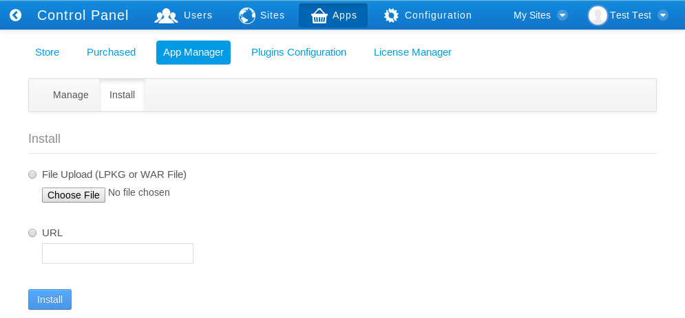

Installing plugins manually is not quite as easy as installing plugins via the Marketplace interface but it’s still quite simple. There are several scenarios in which you would need to install plugins manually rather than from Liferay’s repositories:
Your server is firewalled without access to the Internet. This makes it impossible for your instance of Liferay to connect to the plugin repositories.
You are installing portlets which you have either purchased from a vendor, downloaded separately or developed yourself.
For security reasons, you do not want to allow portal administrators to install plugins from the Internet before they are evaluated.
You can still use the Control Panel to install plugins that are not available from the online repositories. This is by far the easiest way to install plugins.
If your server is firewalled, you will not be able to install plugins directly from the Liferay Marketplace. Instead, you will need to download the .lpkg file (in the case of a Marketplace app) or .war file (in the case of an individual plugin). Then navigate to the Control Panel and click on App Manager under the Apps heading. Then click on Install. This gives you a simple interface for installing an .lpkg or .war file containing an app or plugin to your Liferay Portal. Use the File Upload option to browse to and install from a local .lpkg or .war file. Use the URL option to install from a remote .lpkg or .war file.

That’s all the information the App Manager needs in order to deploy your portlet, theme, layout template, hook, or web plugin. Click the Install button and your plugin will be uploaded to the server and deployed. If it is a portlet, theme, or layout template you should see it in the appropriate tab of the Plugins Configuration interface.
If you do not wish to use the App Manager to deploy plugins, you can also deploy them at the operating system level. The first time Liferay starts, it creates a hot deploy folder which is, by default, created inside the Liferay Home folder. This folder generally resides one directory up from where your application server is installed, though it may be elsewhere depending on which application server you are running. To find out where the Liferay Home folder is for your application server, please see the section on your server in this guide’s Installation and Setup chapter. The first time Liferay is launched, it creates a folder structure in Liferay Home to house various configuration and administrative data. One of the folders it creates is called deploy. If you copy a portlet or theme plugin into this folder, Liferay hot deploys it and makes it available for use just as though you’d installed it via App Manager in the Control Panel. In fact, this is what the App Manager does behind the scenes.
Created with the Personal Edition of HelpNDoc: Easy EPub and documentation editor